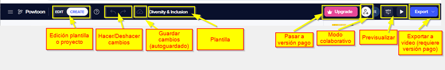
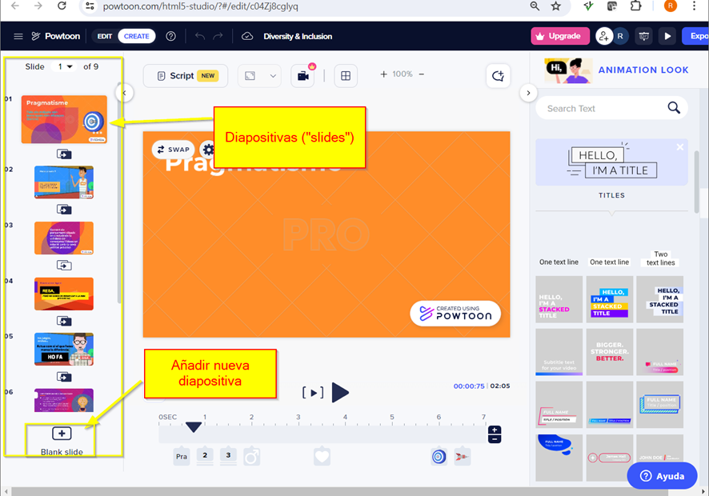
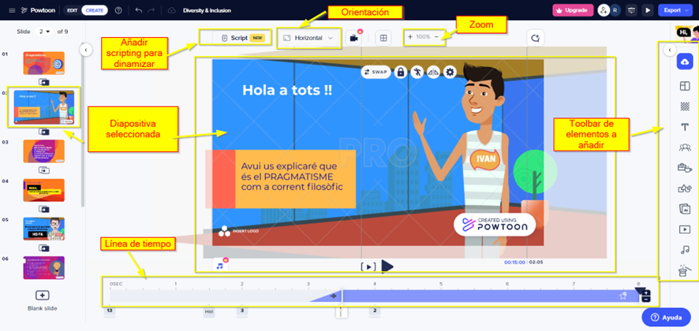
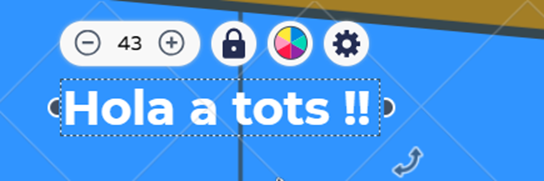
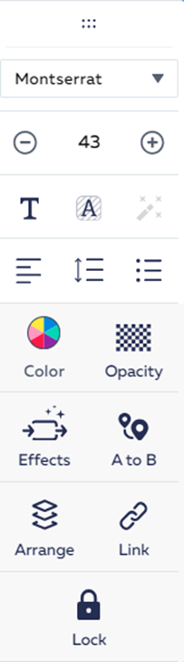
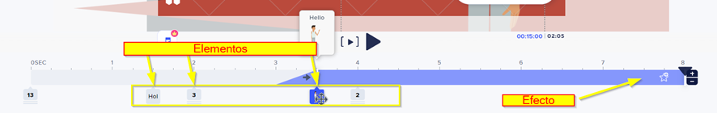

En la pantalla de diseño hay tres zonas principales: Zona superior, Zona lateral y Zona central.
Zona superior: menú
- En la zona superior se puede acceder al menú con las siguientes opciones:

- Modo edición proyecto/plantilla: se indica si se está modificando el proyecto o la propia plantilla.
- Hacer/Deshacer cambios: para deshacer o repetir cambios últimos cambios realizados.
- Guardado: se puede pulsar para guardar los cambios, aunque el proyecto se va guardando automáticamente.
- Upgrade: pasar a versión de pago para tener la funcionalidad completa.
- Modo colaborativo: se puede invitar a otro usuario de Powtoon (indicando su cuenta de correo) para que participe en el proyecto.
- Previsualizar: permite previsualizar en modo slideshow de diapositivas o video.
- Exportar a video: requiere versión de pago. Un tip para poder tener la presentación en vídeo es previsualizar el vídeo y capturarlo mediante otro programa (p.e. Windows tiene herramientas de grabación accesibles mediante las teclas Windows + G).
Zona lateral: lista de diapositivas (slides)
- En la zona izquierda se permite visualizar diapositivas existentes y crear nuevas. Al pulsar sobre una diapositiva se cargará para poder editarla en la zona de diseño (zona central).

Zona central: Diseño de diapositiva
- En la zona central se muestra la diapositiva seleccionada para poder editarla e introducirle contenido.

- En la parte central se encuentra el contenido de la diapositiva.
Seleccionando un elemento podemos configurarlo:


Las propiedades de configuración varían de un elemento a otro según su tipo (texto, imagen, personaje…). Estas serían las propiedades principales:
- Swap: cambia un elemento por otro.
- Pose: se puede configurar la pose de ciertos elementos, como los personajes que tienen diferentes poses (mover brazos, hablar…).
- Animation: número de veces que se repite un movimiento.
- Flip: cambio de orientación.
- Color: establece color de ciertos elementos.
- Opacity: configura la transparencia.
- Effects: : animación al aparecer y desaparece un elemento.
- A to B: desplazamiento de un elemento de un punto A a un punto B en la diapositiva.
- Arrange: permite ordenar los elementos en diferentes capas de profundidad.
- Link: enlace a una página web.
- En la parte superior se encuentran las opciones de scripting, orientación diapositiva, zoom…
- En la parte izquierda se encuentran los elementos que se pueden añadir a la diapositiva: imágenes, textos, sonidos… Pulsando sobre un elemento, se muestran opciones para añadir a la diapositiva dicho elemento.
- En la parte inferior se encuentra la línea de tiempo, ya que una diapositiva en Powtoon no es algo estático, se puede configurar que los elementos de la diapositiva aparezcan o desaparezcan durante momentos determinados, así como introducir efectos (pop, fade…).
